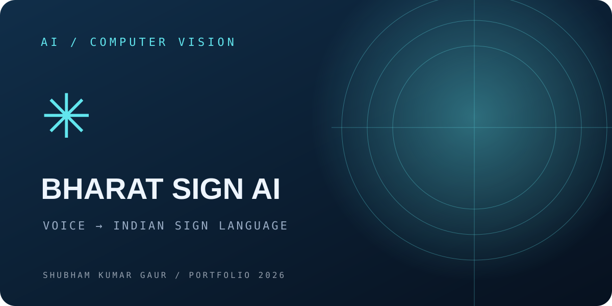
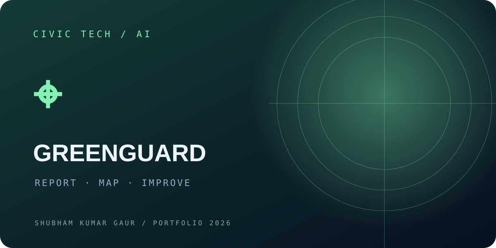
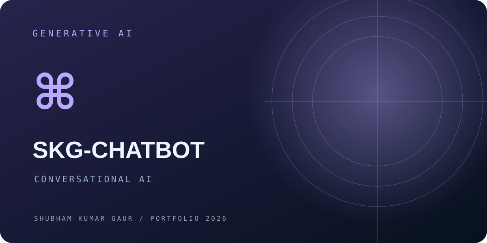
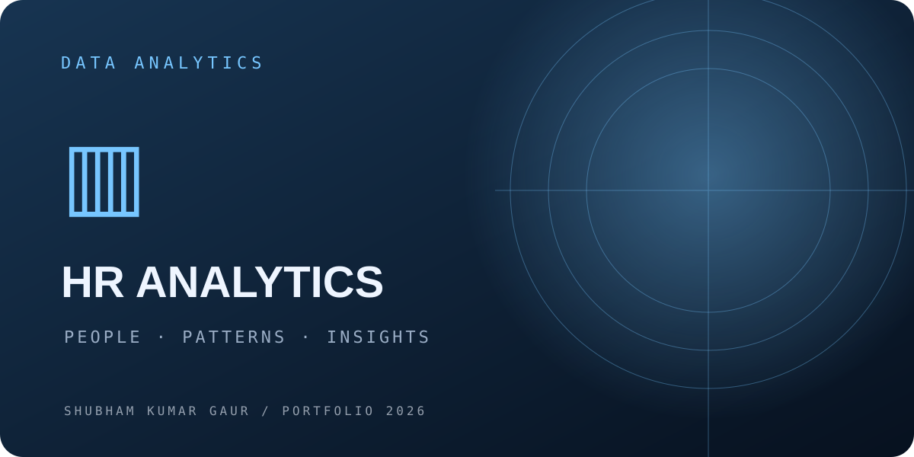
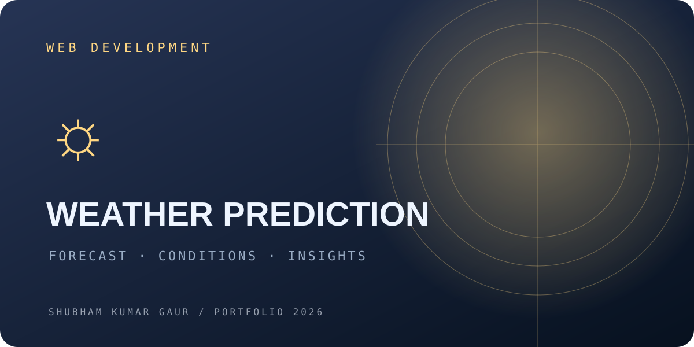

01 — AI / COMPUTER VISION↗

Bharat Sign AI
Voice-to-Indian Sign Language concept combining speech interaction, pose/keypoint processing, and an interactive 3D avatar to support more accessible communication.
Explore repository ↗I'm Shubham Kumar Gaur — a Computer Science student exploring the intersection of software engineering, AI/ML, and data analytics.
I enjoy turning real-world problems into practical digital experiences — from AI-powered applications to data dashboards and full-stack web projects.
A selection of projects across AI, web development, and analytics. Source code links lead to your GitHub profile until individual repository URLs are added.

Voice-to-Indian Sign Language concept combining speech interaction, pose/keypoint processing, and an interactive 3D avatar to support more accessible communication.
Explore repository ↗
A Flask-based platform for reporting environmental and public concerns, with photo evidence, GPS tagging, AI-assisted triage, maps, and analytics dashboards.
Explore repository ↗
An AI chatbot built with Flask and the Gemini API, with an interactive frontend and backend API integration.
Explore repository ↗
Interactive dashboard exploring HR data through visual storytelling and exploratory analysis.
Explore GitHub ↗
A city-wise weather interface displaying current conditions and multi-day forecast information.
Explore GitHub ↗Python, Java, C, SQL, JavaScript
React, HTML, CSS, Node.js, Express.js, Flask, REST APIs
Power BI, Tableau, Excel, pandas, NumPy, EDA, visualization
PyTorch, scikit-learn, MediaPipe, pose/keypoint processing
MongoDB, MongoDB Atlas, MySQL, Cloudinary
Git, GitHub, authentication, API integration, security
Performed hardware repair, system diagnostics, troubleshooting, and software issue resolution to improve reliability and reduce downtime.
Built practical skills in data handling, analysis, visualization, and analytics workflows using Python, SQL, and Excel.
Dr. A.P.J. Abdul Kalam Technical University, Lucknow · CGPA: 7.0/10.0
Certifications include JPMorgan Chase Software Engineering Simulation, Tata GenAI Data Analytics Simulation, IBM Big Data and Business Management, Deloitte Data Analytics Simulation, and Power BI training.
Job simulations, workshops, and collaborative innovation experiences that complement my project work.
Completed virtual job simulations to practise industry-style tasks, analytical thinking, and professional problem-solving. See the listed simulations on my résumé.
Completed a workshop with TechTip24. Credential verification link provided.
Participated in the HackIndia Hackathon, gaining experience in collaborative problem-solving and rapid prototyping.
I'm interested in software development, backend engineering, applied AI/ML, and data analytics opportunities.